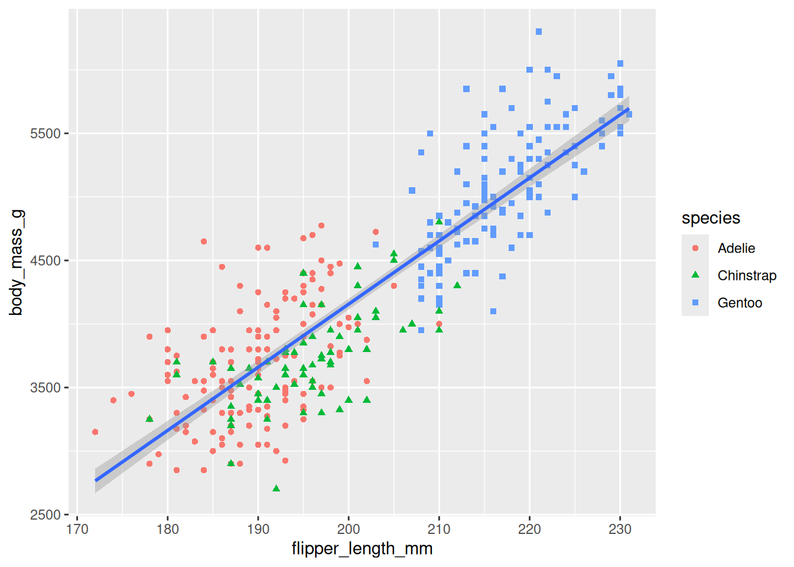

Markdown is a lightweight markup language for text editing. All of the documents you have seen in this course have been formatted with markdown. The platform this course website has been built on is called Quarto and implements markdown. In this section, we’ll look at some of the post commonly used markdown syntax, using Quarto to create lab notebooks, presentations, automate analyses, and host websites like this one.
Please bookmark these books for your students! They are excellent resources!
Markdown Syntax
There are plenty of really great cheatsheets like this one from Markdown Guide as well as this one. We’ll go through some of these details with you live rather than copying and pasting really good tutorials here.
Using Markdown
There are many different platforms that use Markdown syntax in text editing. At SLUBI, we have a strong preference towards Visual Studio Code or its open-source alternative, VSCodium. To use all of the features, you need to install the Markdown extension.
To access to Extensions, either navigate with shortcuts (these are operating system depdenent and can be set by users, so we won’t go into that, but feel free to explore), from the View dropdown menu, or from the Extensions tab on the left.
Extensions from View
Extensions from the shortcut
In the search bar, you can search for general Markdown viewers and install them. For this course, we will use Quarto. Install that extension. Please also note the verified tick.
Quarto extension to install
The Markdown All in One extension is also an interesting case to look at. It has a lot of downloads despite not being verified by an organisation. In general, be wary when installing extensions. Opt for ones that are installed often, as this one is. If possible, try to use verified extensions. In the age of information security we live in, it is becoming more important to use trusted content than whatever you find on the internet.
Quarto
Quarto is an open-source technical and scientific reporting and publishing system.
Quarto landing page
Installing Quarto on your Machine
We have already installed the extension that allows us to use a bunch of really cool features in VSCode with Quarto, but we need to have the backend installed on our machines as well. To install the program, you will click on the Get Started link on the homepage, download the program that’s suited to your operating system, and install it. The Guide link here also takes you to really easy tutorials on how to set up a variety of other uses of Quarto that we simply don’t have time for in this course.
Important
All instructions for creating, editing, previewing, and rendering projects will be shown in VSCode and it will not be specified over and over
Creating a Project
Under the previously shown View option, navigate to the Command Palette. A dropdown menu at the top will start with a >. Type quarto and a list of functions will be shown. The order will be different based on what you’ve used and what you’ve used most recently.
Quarto functions
We will Create a project and create a Website for the purpose of this course.
Creating a Project
Structure of a Project
All Quarto projects have a YAML file with information about the project called _quarto.yml as well as an index.qmd file. The landing page of your website is the index.qmd file, while the _quarto.yml file contains all of the visual aspects of your website. We’ll spend a bit of time looking at the design of our course website so that you can see how it looks behind the scenes. Hopefully, with a website you know as well as you do by now, this will make things a lot more tangible!
Note
Fun fact: YAML stands for “yet another markup language”
Adding Files and Figures
Often, we don’t just need a landing page like the index.qmd file, but we want different pages, as we have here. You can add blank documents with the .qmd extenstion. It is important for each file to have a title section so that it can be displayed properly and linked with your other pages. Update the _quarto.yml file to include this page in your table of contents or navigation bar (depending on what you opted to use), or simply link to the file with a hyperlink as we have done on our landing page
Tip
Remeber to give your files a good name with no spaces in them. Also remember to add the .qmd extension
To add external figures to your document as we have done here with screenshots, you can simply link to the figure by its relative path, as described here.
Tip
It is good practice to have your images in a folder inside of your Quarto project in case Future You forgets that a figure is linked to a document and you move the folder containing all of your photos, for example. It also makes it much easier to put everything into a repository on GitHub to launch your site
Adding Analyses
Quarto is really good at implementing other programming languages within it. You can use R within it seamlessly. There is support for a large number of other programming languages within Quarto, but this course is only going to showcase the use of R.
Important
You will have to install the R and R syntax extensions for this to work in VSCode
Warning: Removed 2 rows containing non-finite outside the scale range
(`stat_smooth()`).
Warning: Removed 2 rows containing missing values or values outside the scale range
(`geom_point()`).

If you have analyses that you have to repeat across several projects, these documents can be shared to create uniformity among your produced results, and your students do not need to reinvent the wheel. With several pages being supported in a single Quarto project, you also reduce the potential messiness that is introduced whenever you onboard a new student.
Viewing the Project
Previewing
As you go along, you might be interested in seeing what your pages look like. In the terminal, type
quarto preview
or simply click the preview button in VSCode and a side by side preview will open where you can click through your indexed pages.
VSCode Preview function
Different Views
From the Command Palette, you can select whether you would like to view your document in source mode or in visual mode. The difference is mostly that you can interact with the document in the way it will be rendered in visual mode. For some people, visual mode is a lot more intuative, and there is no right or wrong way to interact with your documents.
Publishing and Sharing the Project
With Quarto, you can render to HTML, Word, and PDF formats. To render individual files into PDF, add the information from this Quarto guide into the header of your document.